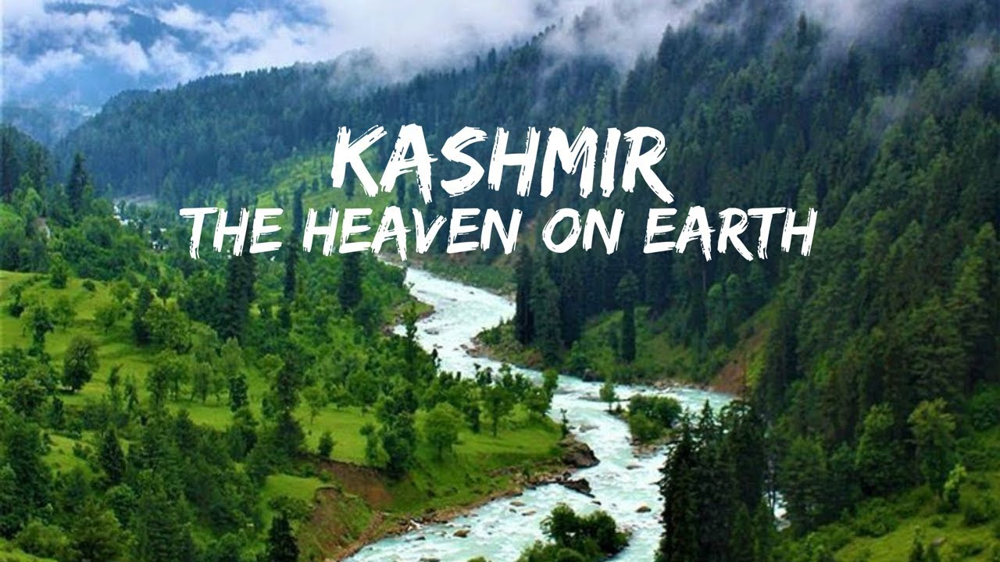
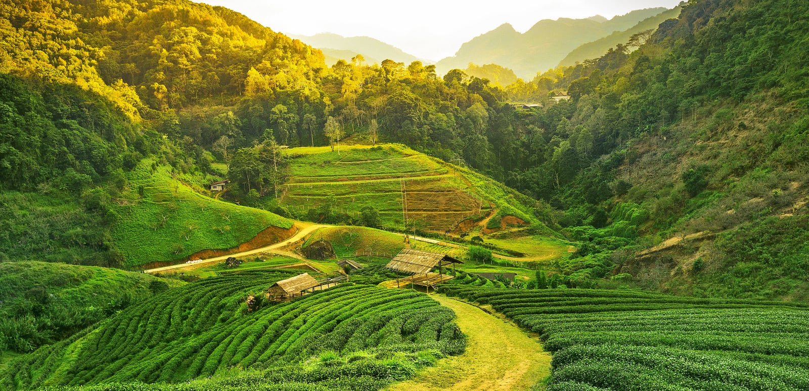
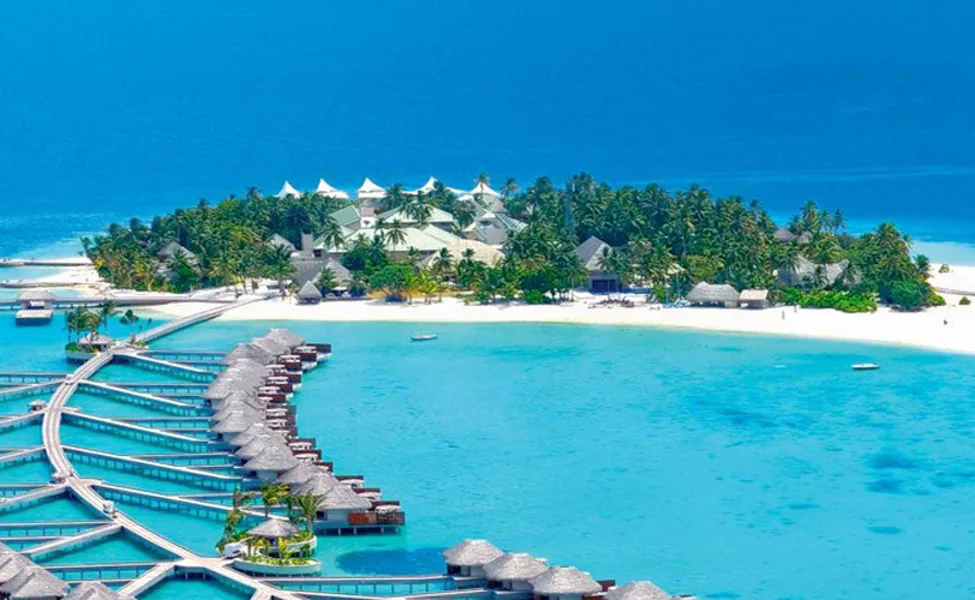
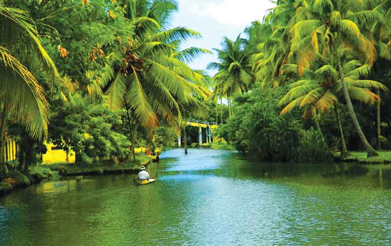
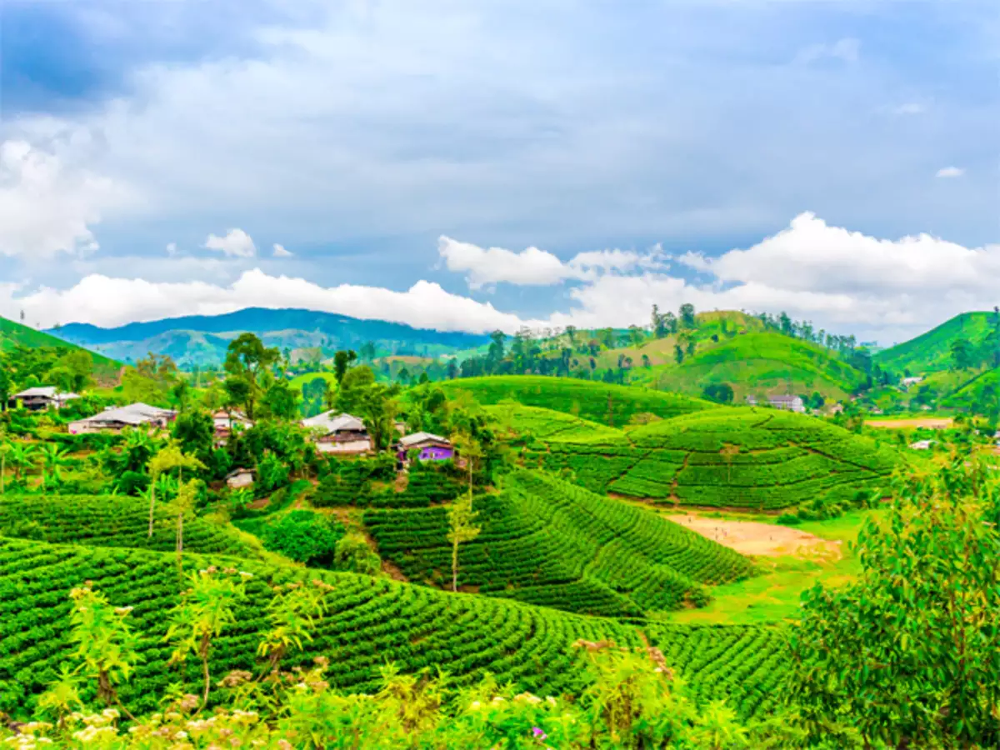
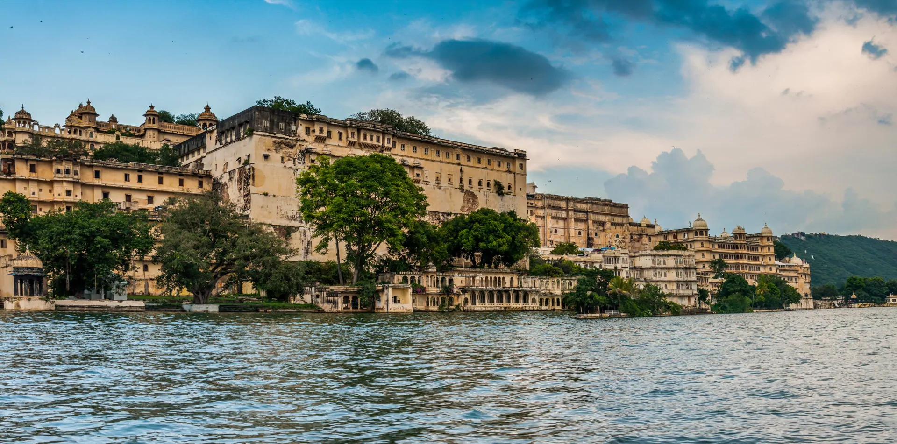
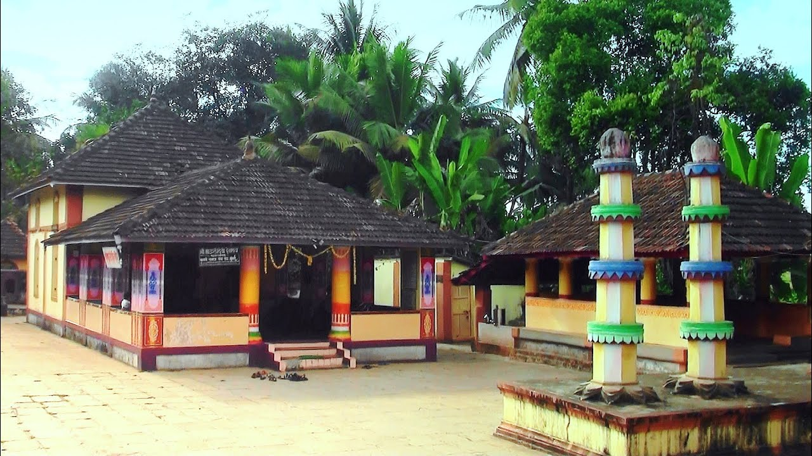

Hello friends if you are also fond of traveling. And you want to go for a vacation and you do not know where to go, do not worry, today I will tell you about 10 beautiful places in India where you can go to celebrate your holiday.
1. jammu kashmir (india)
Jammu Kashmir is one of the beautiful places in the world. the atmosphere here, Beautiful clouds will enchant you, to visit millions of people here in the year. Come here It is the most beautiful place in the world. People also call it the heaven of the earth. If you want to roam then definitely come here
 jammu and kashmir2. assam land of natural beauty (india)
Assam Friends is one of the beautiful places in India. The beautiful tea plantations here will fascinate you. This beautiful view of the mountain is really beautiful. Many people come here only for tour. if you also want to go here then definitely come here.
 assam3. agaati iceland (india)
Agatti Ice Land This ice land famous all over the world is very beautiful. If you too are crazy about Iceland, then you can came here . here beauty definitely get enchanted you . Agati Ice Land is located in Lakswadeep. The major traffic here is the boat.
 agati4. backwater kerala (india)
Kerala is known for its natural beauty. Friends, the most famous of Kerala is the beautiful backwater lake here in South Kerala, India. Friends backwater lake is connected to the arab sager Sea. This is called back water because 37 rivers flow behind it. The view here is verry beautiful.
 backwater5. tawang arunachal pradesh (india)
Tawang is a very beautiful place. If you come here, then the beauty of this place will touch your heart. village situated between the mountains and mountains here looks very beautiful. If you want a quiet place for the holidays. then you will definitely come here and you will love it. The view here is very beautiful
 tawang
tawang
6. taj mahal (india)
Taj Mahal is famous all over the world where thousands of visitors come here every day to visit. the Taj Mahal located in Delhi the capital of India. The Taj Mahal is an ancient fort built by Shah Jaha with white marble stone. It was built by Shah Jah in memory of his wife. If you say to roam, you must come to see the Taj Mahal.
 tajmahal
tajmahal
7. darjeeling (india)
Darjeeling is called the capital of the mountains, which is located at 2134 meters above sea level. It is known worldwide for its tea gardens.this most beautyfull palace
 dargling8. jaipur and udaypur (india)
Jaipur and Udaipur Located in Rajasthan, Jaipur and Udaipur are known for their artistic and architectural beauty. The Lake Palace in Udaipur is one of the most beautiful places in the world. Jaipur also houses Hawamahal, which is considered to be an excellent example of architecture.
 jaipur9. goa (india)
Goa Goa is the smallest state in India that is known for its sea beach. The seafood, water sports played by it recognizes it as a place of pleasure. The fort of Alona located here, the Goa museum, the fort of Chapora are other tourist attractions.
 goa
goa
10. Mysore (india)
Mysore Mysore is the cultural capital of Karnataka known for its palaces. The Mysore palace located here is world famous, this palace is also known as 'Amba Villa'. About 2.7 million tourists visit the palace every year.
 masure